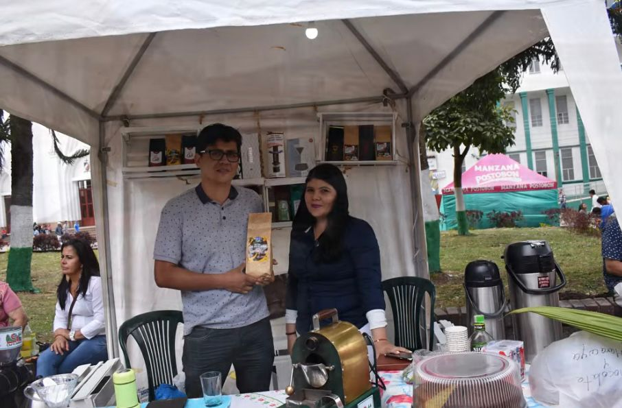
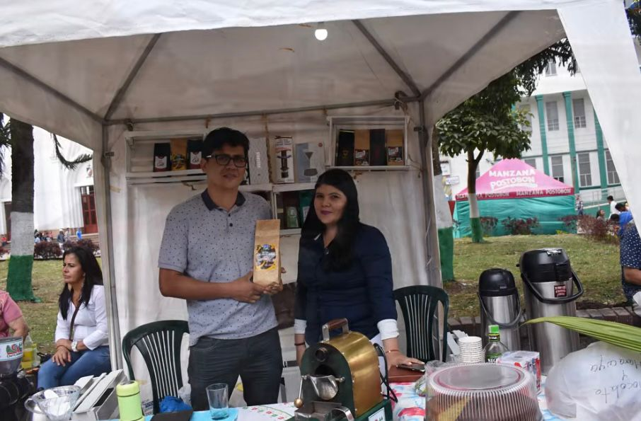

Desde la tierra fértil del corregimiento de San Fernando, en las montañas del Líbano, Tolima, te traemos un café que cuenta historias de tradición, esfuerzo y sabor auténtico. Nuestra marca, Café Sin Fronteras, es el fruto del trabajo colectivo de la Asociación de Productores Agropecuarios de San Fernando (APROASANF), constituida legalmente el 30 de diciembre de 2005 por un grupo de 20 familias agricultoras de las veredas Mesopotamia, Alto Cielo y San Fernando. Desde entonces, nos propusimos un objetivo claro: comercializar nuestro café especial a precios justos, abriendo caminos en mercados nacionales e internacionales.
Hoy, APROASANF está conformada por 30 familias campesinas del municipio de Líbano, Tolima, de las cuales más del 50% son mujeres y jóvenes comprometidos con el campo. Una parte significativa de nuestros asociados son víctimas del conflicto armado, registradas ante la Unidad de Víctimas del Gobierno Nacional, quienes han encontrado en el café una oportunidad de reconstrucción y esperanza.
A lo largo de los años, hemos fortalecido una cadena productiva responsable, cuidando la trazabilidad, la inocuidad y el origen de nuestro café. Más que un producto, representamos un territorio, una comunidad resiliente y un legado de calidad que trasciende fronteras.
Somos caficultores y caficultoras del Líbano, Tolima, unidos por el deseo de transformar nuestra realidad rural a través del trabajo asociativo, la sostenibilidad y el amor por el café. En APROASANF creemos en una producción limpia, en el comercio justo y en el poder de nuestras raíces para construir un futuro digno desde el campo colombiano.
Visión: Llevar al mundo un café especial con origen en San Fernando, cultivado de forma limpia y sostenible por familias campesinas, preservando la calidad, la identidad territorial y el compromiso social en cada grano.
Misión: Promover y posicionar un café especial con origen en San Fernando, cultivado de forma limpia y sostenible por familias campesinas, garantizando calidad, identidad territorial y compromiso social en cada grano.
 
